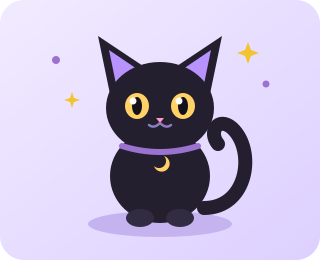

Why Do Cats Knock Things Off Tables?

Scientists call it curiosity. Cats call it gravity testing. According to our resident reporter Luna, a glass of water sitting near the edge of a desk is practically begging to be pushed.
"I looked my human dead in the eyes and tapped the pen onto the floor. 10/10 would do again." — Luna, Age 2
Other experts note that knocking objects down is also a clever way to remind humans that dinner is three minutes late.